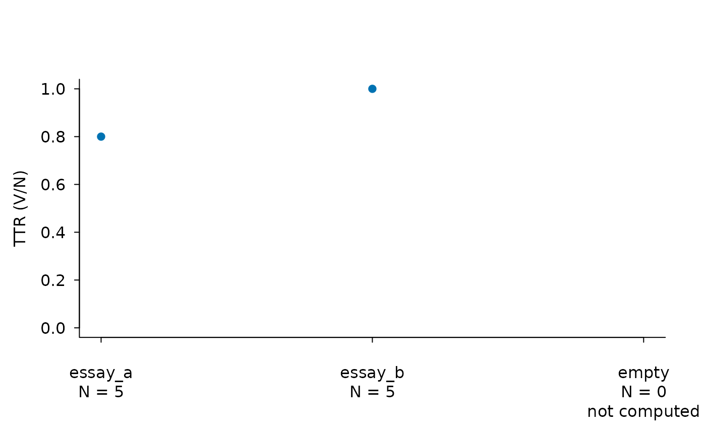

Tokenize and Analyze Multiple Texts with Explicit Document IDs
lexdiv_text_batch.RdRead named texts, data frames, or tibbles into complete tokenizations, then
compute lexical diversity (including multi-parameter plan profiles)
while retaining document-local audits and preprocessing provenance.
Usage
lexdiv_tokenize_batch(
documents,
id_col = "document_id",
text_col = "text",
normalization = "NFC",
case = "lower",
keep_numbers = FALSE,
tokenizer = "english"
)
lexdiv_metrics_text_batch(
documents,
id_col = "document_id",
text_col = "text",
unit = "surface",
word_inclusion = "all",
normalization = "NFC",
case = "lower",
keep_numbers = FALSE,
tokenizer = "english",
...,
plan = NULL,
max_rows = 1e6,
metadata = NULL
)
# S3 method for class 'lexdiv_text_batch_results'
print(x, ...)
# S3 method for class 'lexdiv_text_batch_results'
plot(x, ..., monochrome = FALSE)Arguments
- documents
A named character vector, a data frame/tibble with ID and text columns, or (for
lexdiv_metrics_text_batch()) a named list oflexdiv_tokenizationobjects.- id_col, text_col
Names of the selected ID and text columns.
- unit, word_inclusion
Lexical-unit and word-inclusion settings.
- normalization, case, keep_numbers, tokenizer
Preprocessing settings for raw text inputs (defaulting to
normalization = "NFC",case = "lower",keep_numbers = FALSE,tokenizer = "english").- ...
For
lexdiv_metrics_text_batch(), metric arguments forwarded tolexdiv_metrics_textwhenplanisNULL. Forprint()andplot(), arguments passed to the underlying method.- plan
Optional normalized request plan from
lexdiv_plan.- max_rows
Row ceiling when
planis supplied.- metadata
Optional document metadata data frame/tibble matched by
document_id.- x
A
lexdiv_text_batch_resultsobject.- monochrome
Logical switch for black/grey plotting.
Value
lexdiv_tokenize_batch() returns an input-ordered named list of
lexdiv_tokenization objects. lexdiv_metrics_text_batch() returns
a lexdiv_text_batch_results list with results,
token_audit, preprocessing, and optional metadata, which
pipes directly into lexdiv_widen, lexdiv_screen_lengths,
and lexdiv_study_table.
Examples
texts <- data.frame(
document_id = c("essay_a", "essay_b", "empty"),
text = c("Cats chase cats and dogs.", "The reader reads a story.", "")
)
result <- lexdiv_metrics_text_batch(texts, metrics = "ttr")
lexdiv_widen(result)
#> <lexdiv_wide_results: 3 rows; 12 columns>
#> document_id ttr__value ttr__status ttr__missing_reason ttr__method_id
#> 1 essay_a 0.8 ok <NA> ttr_v_over_n_v1
#> 2 essay_b 1.0 ok <NA> ttr_v_over_n_v1
#> 3 empty NA missing empty_input ttr_v_over_n_v1
#> ttr__below_quality_floor ttr__metric_contract_id
#> 1 FALSE ldfreq-lexical-diversity-core
#> 2 FALSE ldfreq-lexical-diversity-core
#> 3 TRUE ldfreq-lexical-diversity-core
#> ttr__metric_contract_version ttr__requested_parameters
#> 1 0.2.0
#> 2 0.2.0
#> 3 0.2.0
#> ttr__effective_parameters ttr__N ttr__V
#> 1 5 4
#> 2 5 5
#> 3 0 0
plot(result, metric_id = "ttr")

# Direct plan execution on raw texts:
plan <- lexdiv_plan(presets = character(), specs = list(
lexdiv_spec("ttr", request_id = "ttr")
))
planned <- lexdiv_metrics_text_batch(texts, plan = plan)
planned$results[, c("document_id", "request_id", "value", "status")]
#> <lexdiv_profile_batch_results: 3 documents; 3 specification results; schema unknown>
#> document_id request_id value status
#> 1 essay_a ttr 0.8 ok
#> 2 essay_b ttr 1.0 ok
#> 3 empty ttr NA missing